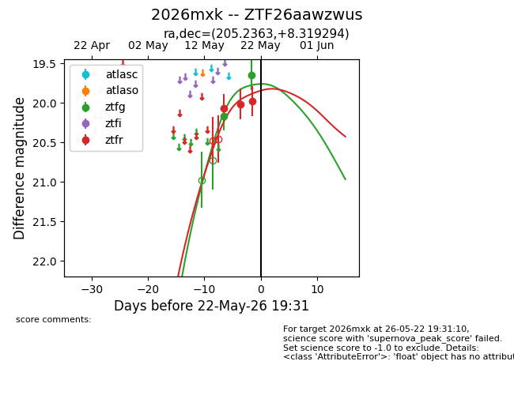
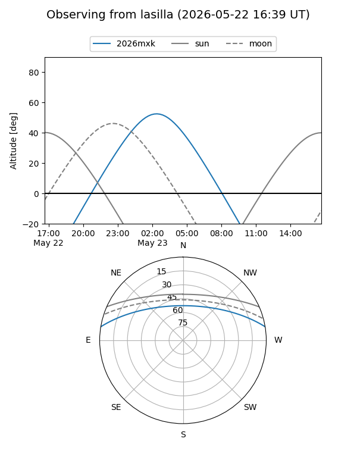
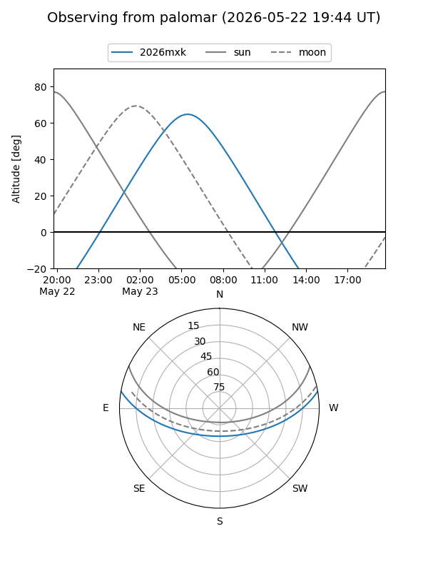
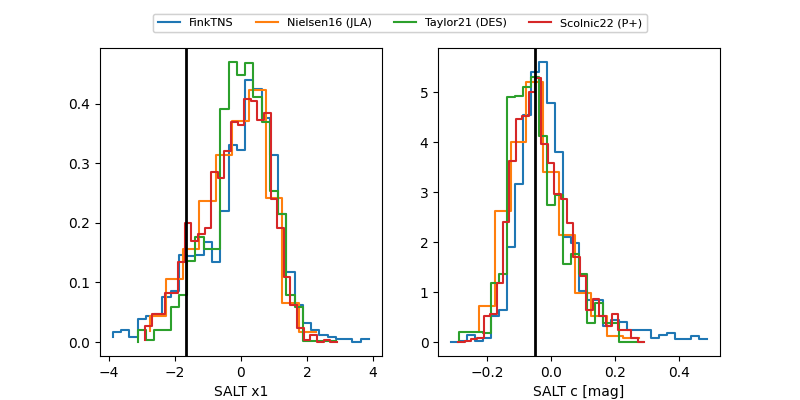

2026mxk
Target 2026mxk at 2026-05-22 19:33
Aliases and brokers:
lsst-FINK: link
lsst-Lasair: link
lsst-ALeRCE: link
ztf-FINK: link
ztf-Lasair: link
ztf-ALeRCE: link
TNS: link
YSE: link
alt names
ZTF26aawzwus (ztf,fink_ztf)
2026mxk (tns,yse)
Coordinates:
equatorial (ra, dec) = 205.2363,+8.31929
equatorial (HMS+DMS) = 13:40:56.72,+08:19:09.46
galactic (l, b) = (337.1444,+67.83971)
Flags:
TNS confirmed: nan
Photometry:
last ztfg=19.65, ztfr=19.98
2 ztfg, 3 ztfr detections
Lightcurve

Visibility


Additional plots
